Sailor Moon — это первый сезон первого аниме серии Сейлор Мун.
Включает в себя эпизоды 1-46 и называется так же, как и аниме в целом — «Прекрасная воительница Сейлор Мун»
(яп. 美少女戦士セーラームーン бисё:дзё сэнси сэ:ра: му:н). Иногда, чтобы указать, что имеется в виду именно первый сезон,
его называют «Sailor Moon Classic».
-
Антагонисты:
- Королева Берилл
- Джедайт
- Нефрит
- Зойсайт
- Кунсайт
- Королева Металлия
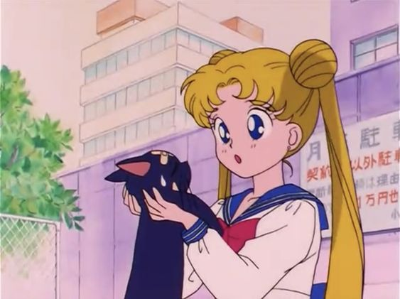
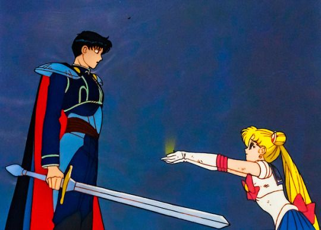
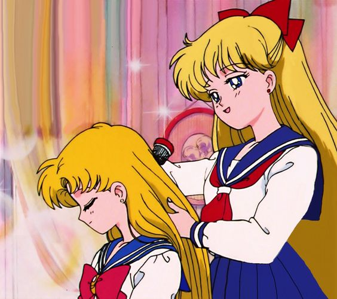
Sailor Moon R (美少女戦士セーラームーン R бисё:дзё сэнси сэ:ра: му:н а:ру) — второй сезон первого
аниме-сериала «Сейлор Мун». Включает в себя эпизоды 47-89. Данный сезон включает в себя две истории:
про Дерево Мира Духов (Дерево Тёмного Мира) и про Хрустальный Токио и войну с Немезисом.
-
Антагонисты:
- Анна
- Эйл
- Коан
- Берте
- Калаверас
- Петц
- Рубеус
- Изумруд
- Сапфир
- Алмаз
- Мудрец
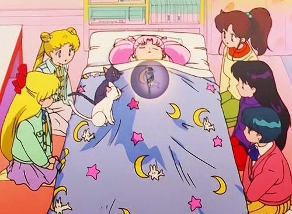
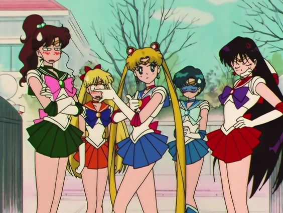
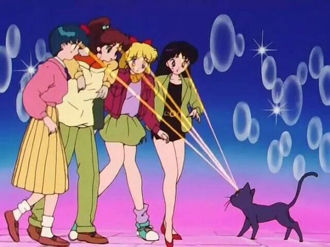
Sailor Moon S (美少女戦士セーラームーン S бисё:дзё сэнси сэ:ра: му:н сю:па) — третий сезон первого аниме-сериала «Сейлор Мун».
Содержит серии 90-127. В русском переводе 2x2 назывался: «Сейлор Мун Супер-воин». История о пяти Сейлор Воинах и главной
героини Усаги Цукино. Девочки продолжают сражаться за любовь и справедливость.
-
Антагонисты:
- Каоринайт
- Профессор Томоэ
- Юджиал
- Мимет
- Бириюи
- Теллу
- Сайприн
- Птирол
- Мессия Безмолвия
- Фараон 90
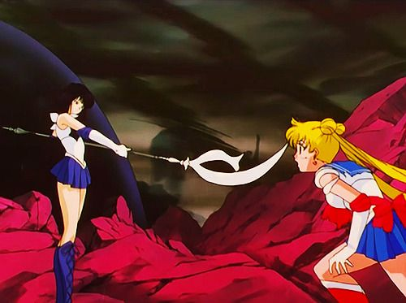
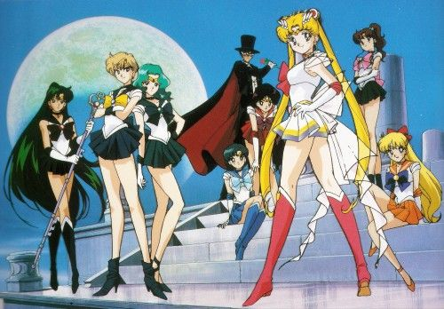
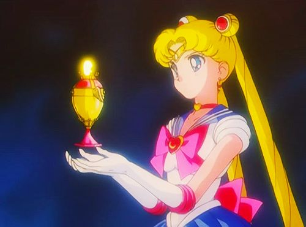
Sailor Moon SuperS - 4-й сезон аниме-сериала Sailor Moon.
Девочки продолжают свою священную борьбу за любовь, справедливость, чистые сердца и мечты людей.
-
Антагонисты:
- Циркония
- Тигровый Глаз
- Ястребиный Глаз
- Рыбий Глаз
- Нехеления
-
-
Квартет:
- Цере-Цере
- Пала-Пала
- Юн-Юн
- Вес-Вес
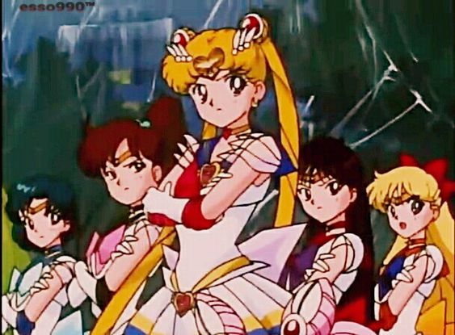
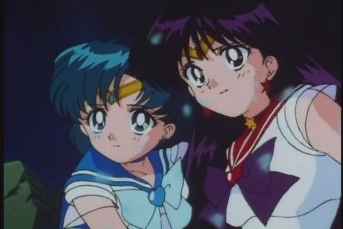
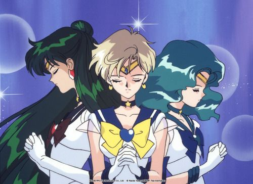
Sailor Moon Sailor Stars - 5-й сезон анимационного аниме-сериала Sailor Moon.
Является последним сезоном сериала и окончанием истории главных персонажей.
-
Антагонисты:
- Королева Нехеления
- Сейлор Железная Мышь
- Сейлор Алюминиевая Сирена
- Сейлор Свинцовая Ворона
- Сейлор Оловянная Кошка
- Сейлор Галаксия
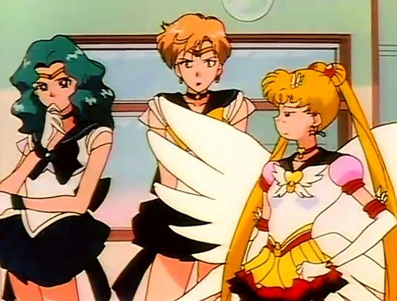
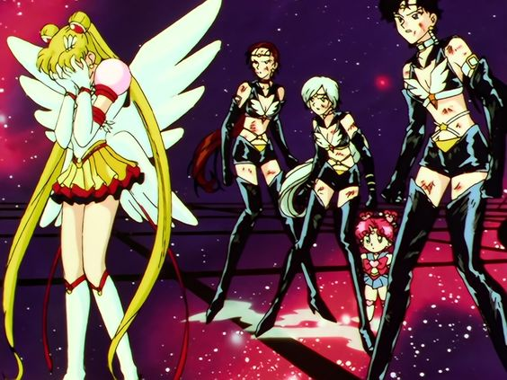
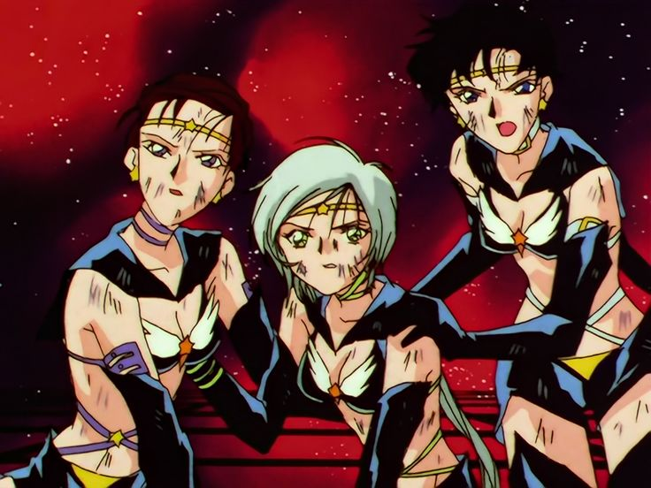